1036C14 CAMSHAFT IN CYLINDER HEAD - R R WITH HEAD REMOVED
- Path
- Procedures > 10 ENGINE UNIT > 1036 TIMING SYSTEM > 1036C OVERHEAD CAMSHAFTS (2) > 1036C14 CAMSHAFT IN CYLINDER HEAD - R R WITH HEAD REMOVED
- Kind
- repair procedure (removal / refitting; the operation number is the code)
- Applies to
- engines: 1.8 T.SPARK, 2.0 JTS; all production periods
- Interactive page
- https://sloeber94.github.io/elrnDB-aGt/en/#/125000979
Applies to: engines: 2.0 JTS; all production periods
 Removing
Removing
 Refitting
RefittingPosition the cylinder head on a special workbench.
1. Undo the connectors (1a) and remove high pressure fuel pipe (1b).
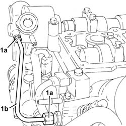
Applies to: engines: 2.0 JTS; all production periods
1. Undo the bolts (1a) and remove the high pressure fuel pump (1b) complete with O-ring (1c).
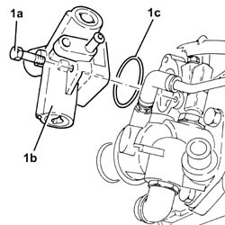
Applies to: engines: 2.0 JTS; all production periods
1. Undo the exhaust side driven timing pulley bolt (1a) using the tool (1b) for counter-torque.
Description | Code | |
|---|---|---|
1b | Spanner for rotating timing pullies | 1.860.831.002 |
2. Remove the exhaust side timing driven pulley.
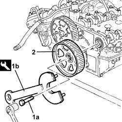
Applies to: engines: 2.0 JTS; all production periods
1. Undo the inlet side driven timing pulley bolt (1a) using the tool (1b) for counter-torque.
Description | Code | |
|---|---|---|
1b | Counter-torque | 1.860.856.001 |
2. Remove the exhaust side timing driven pulley.
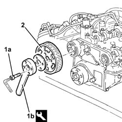
Applies to: engines: 2.0 JTS; all production periods
Check that the camshaft endfloat corresponds to the recommended values using a dial gauge on a magnetic base.
Measurement | Value | ||
|---|---|---|---|
- | Camshaft end float (mm) | 0.10 ÷ 0.23 |
If the endfloat for the camshafts does not correspond to the recommended values, replace the worn components when reassembling the cylinder head.
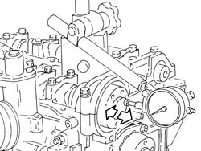
Applies to: engines: 2.0 JTS; all production periods
1. Undo the bolts (1a) and remove the camshaft caps (1b).
2. Remove the inlet side camshaft front supper upper half-bearing.
3. Remove the camshafts.
4. Remove the camshaft front oil seals.
5. Remove the inlet side camshaft front support lower half-bearing.
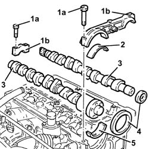
Applies to: engines: 2.0 JTS; all production periods
Refitting
RemovingClean any residues of sealant from the contact surfaces between the cylinder head and the front bearing cap.
Place the inlet side camshaft front support lower half-bearing in its housing.
Place the camshafts in their housings.
Place the inlet side camshaft front support upper half-bearing in its housing.
1. - Place the camshaft caps (1a) in their housings and secure them tightening the bolts (1b) to the recommended torque.
Fastening | Component | Ø | Value (daNm) | |
|---|---|---|---|---|
1b | Bolt | CAMSHAFT SUPPORTS | M7 | (Cylinder head side) 1.4 - 1.7 |
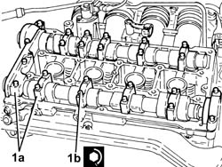
Applies to: engines: 2.0 JTS; all production periods
1. Fit the exhaust side camshaft front oil seal (1a) using the tool (1b).
Description | Code | |
|---|---|---|
1b | Fitting tool | 1.821.228.000 |
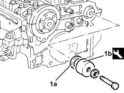
Applies to: engines: 2.0 JTS; all production periods
1. Fit the inlet side camshaft front oil seal (1a) using the tool (1b).
Description | Code | |
|---|---|---|
1b | Fitting tool | 1.821.252.000 |
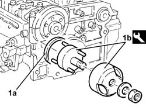
Applies to: engines: 2.0 JTS; all production periods
Refit the inlet side toothed driven pulley in its seat and secure with the bolts without tightening them.
Refit the exhaust side toothed driven pulley in its seat and secure with the bolt without tightening.
1. Position the high pressure fuel pump (1a) , complete with O-ring (1b), in its housing and secure it tightening the bolts (1c) to the recommended torque.
Fastening | Component | Ø | Value (daNm) | |
|---|---|---|---|---|
1c | Bolt | PRESSURE PUMP | M6 | (Cylinder head side) 0.8 - 1.0 |
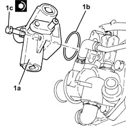
Applies to: engines: 2.0 JTS; all production periods
1. Position a new high pressure fuel pipe (1a) in its housing and secure it tightening connectors (1b) and (1c) to the recommended torque.
Fastening | Component | Ø | Value (daNm) | |
|---|---|---|---|---|
1b | Connector | HIGH PRESSURE FUEL PIPE | M10 | (High pressure pump side) 1.2 - 1.6 |
Fastening | Component | Ø | Value (daNm) | |
|---|---|---|---|---|
1c | Connector | HIGH PRESSURE FUEL PIPE | M12 | (Fuel manifold pipe side) 2.0 - 2.4 |
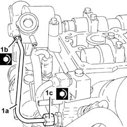
Applies to: engines: 1.8 T.SPARK; all production periods
Removing
Refitting1. Place the tool in the vice.
Description | Code | |
|---|---|---|
1 | Support | 1.820.012.000 |
2. Fit the tool.
Description | Code | |
|---|---|---|
2 | Support | 1.820.258.000 |
3. Fit the tool.
Description | Code | |
|---|---|---|
3 | Spacer | 1.820.267.000 |
4. Position the cylinder head (4a) on the support tools and fasten it using the nuts (4b).
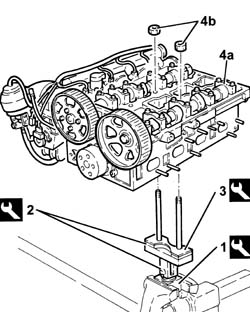
Applies to: engines: 1.8 T.SPARK; all production periods
1. Undo the exhaust side camshaft pulley bolt (1a) using the tools (1b) for counter-torque.
Description | Code | |
|---|---|---|
1b | Counter-torque | 1.822.146.000 |
Description | Code | |
|---|---|---|
1b | Counter-torque | 1.822.156.000 |
2. Remove the exhaust side camshaft drive pulley.
3. Undo the inlet side camshaft drive pulley bolts (3a) using the tool (3b) for counter-torque.
Description | Code | |
|---|---|---|
3b | Counter-torque | 1.822.155.000 |
4. Remove the inlet side camshaft drive pulley.
5. Undo the bolt fixing the cam angle sensor to the camshaft front cap.

Applies to: engines: 1.8 T.SPARK; all production periods
1. Undo the bolts (1a) and remove the camshaft caps (1b).
2. Remove the inlet side camshaft front supper upper half-bearing.
3. Remove the camshafts.
4. Remove the camshaft front oil seals.
5. Remove the inlet side camshaft front support lower half-bearing.

Applies to: engines: 1.8 T.SPARK; all production periods
Refitting
RemovingFit the inlet side camshaft front support lower half-bearing.
Fit the camshafts.
Fit the inlet side camshaft front support upper half-bearing.
Fit the camshaft caps and secure them tightening the bolts to the recommended torque.
Fastening | Component | Ø | Value (daNm) | |
|---|---|---|---|---|
- | - | - | - | - |
1. Fit the exhaust side camshaft front oil seal (1a) using the tool (1b).
Description | Code | |
|---|---|---|
1b | Fitting tool | 1.821.228.000 |

Applies to: engines: 1.8 T.SPARK; all production periods
1. Fit the inlet side camshaft front oil seal (1a) using the tool (1b).
Description | Code | |
|---|---|---|
1b | Fitting tool | 1.821.252.000 |

Applies to: engines: 1.8 T.SPARK; all production periods
5. Tighten the bolt fixing the cam angle sensor to the camshaft front cap.
Applies to: engines: 1.8 T.SPARK; all production periods
Remove the cylinder head from the support tools.
Remove the cylinder head support tools from the vice and put them down.